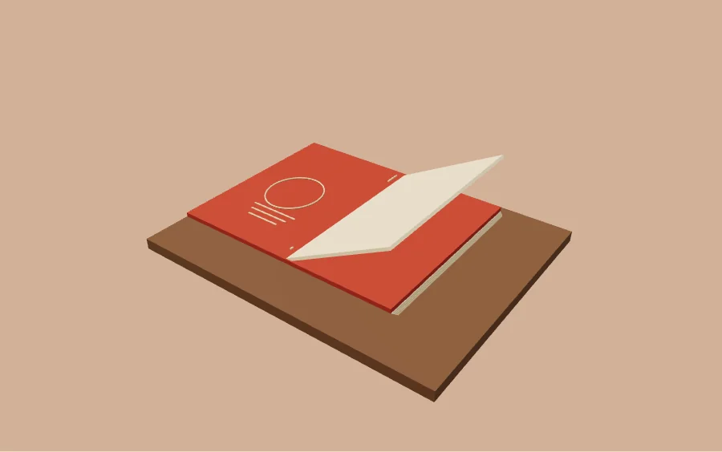

Independent print journal
Paperhas edges
A fictional journal on photocopies, odd formats and the marks that printers usually trim away.
Leaf through the issueInside the first issue
Three short essays told through print experiments. Select a story to pull its cover out of the stack.
Two inks, one loose edge
Shift a single ink a little and a flat shape becomes two. A note on using print errors as a drawing tool.
Booklet imposition planner
Plan saddle-stitch printing. Enter the number of pages and get the left and right positions on both sides of every sheet.
3D model
Folded print signature
